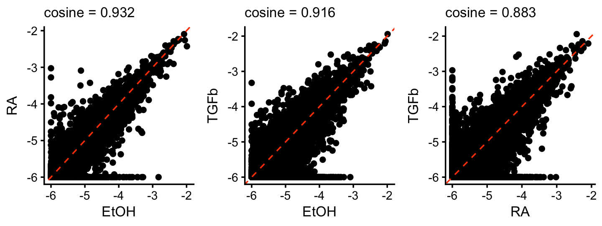
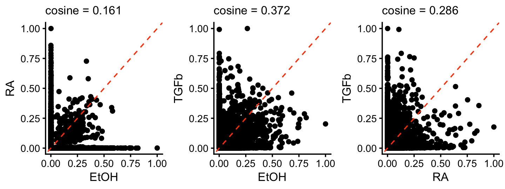
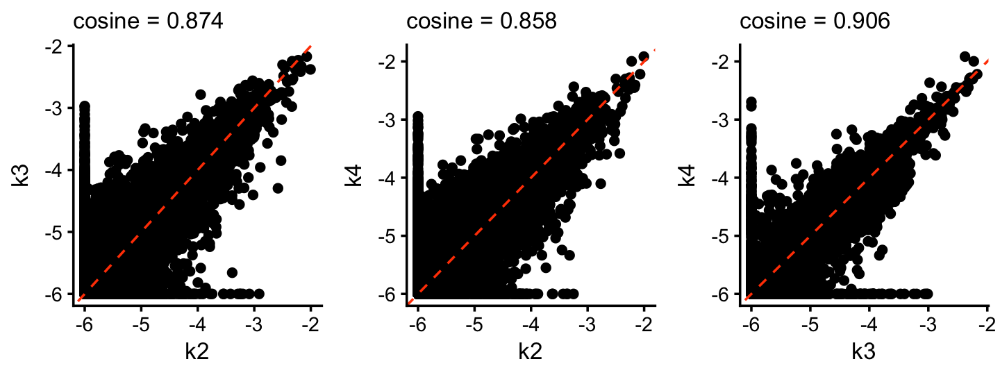

NMF analysis of the MCF-7 data set
Peter Carbonetto
Last updated: 2025-08-12
Checks: 6 1
Knit directory:
single-cell-jamboree/analysis/
This reproducible R Markdown analysis was created with workflowr (version 1.7.1). The Checks tab describes the reproducibility checks that were applied when the results were created. The Past versions tab lists the development history.
Great! Since the R Markdown file has been committed to the Git repository, you know the exact version of the code that produced these results.
Great job! The global environment was empty. Objects defined in the global environment can affect the analysis in your R Markdown file in unknown ways. For reproduciblity it’s best to always run the code in an empty environment.
The command set.seed(1) was run prior to running the
code in the R Markdown file. Setting a seed ensures that any results
that rely on randomness, e.g. subsampling or permutations, are
reproducible.
Great job! Recording the operating system, R version, and package versions is critical for reproducibility.
- flashier-nmf
- flashier-nmf-k3
To ensure reproducibility of the results, delete the cache directory
mcf7_cache and re-run the analysis. To have workflowr
automatically delete the cache directory prior to building the file, set
delete_cache = TRUE when running wflow_build()
or wflow_publish().
Great job! Using relative paths to the files within your workflowr project makes it easier to run your code on other machines.
Great! You are using Git for version control. Tracking code development and connecting the code version to the results is critical for reproducibility.
The results in this page were generated with repository version f5e855c. See the Past versions tab to see a history of the changes made to the R Markdown and HTML files.
Note that you need to be careful to ensure that all relevant files for
the analysis have been committed to Git prior to generating the results
(you can use wflow_publish or
wflow_git_commit). workflowr only checks the R Markdown
file, but you know if there are other scripts or data files that it
depends on. Below is the status of the Git repository when the results
were generated:
Untracked files:
Untracked: analysis/lps_cache/
Untracked: analysis/mcf7_cache/
Untracked: analysis/pancreas_cytokine_S1_factors_cache/
Untracked: analysis/pancreas_cytokine_lsa_clustering_cache/
Untracked: data/GSE132188_adata.h5ad.h5
Untracked: data/GSE156175_RAW/
Untracked: data/GSE183010/
Untracked: data/Immune_ALL_human.h5ad
Untracked: data/pancreas_cytokine.RData
Untracked: data/pancreas_cytokine_lsa.RData
Untracked: data/pancreas_cytokine_lsa_v2.RData
Untracked: data/pancreas_endocrine.RData
Untracked: data/pancreas_endocrine_alldays.h5ad
Untracked: output/panc_cyto_lsa_res/
Unstaged changes:
Modified: analysis/temp4.R
Note that any generated files, e.g. HTML, png, CSS, etc., are not included in this status report because it is ok for generated content to have uncommitted changes.
These are the previous versions of the repository in which changes were
made to the R Markdown (analysis/mcf7.Rmd) and HTML
(docs/mcf7.html) files. If you’ve configured a remote Git
repository (see ?wflow_git_remote), click on the hyperlinks
in the table below to view the files as they were in that past version.
| File | Version | Author | Date | Message |
|---|---|---|---|---|
| Rmd | f5e855c | Peter Carbonetto | 2025-08-12 | wflow_publish("mcf7.Rmd", verbose = T, view = F) |
| Rmd | cdeb683 | Peter Carbonetto | 2025-08-12 | Added cosine similarity scores to the scatterplots in the mcf7 analysis. |
| html | 41566f1 | Peter Carbonetto | 2025-07-05 | Added some ‘other results’ to the mcf7 analysis. |
| Rmd | c3e4bdc | Peter Carbonetto | 2025-07-05 | wflow_publish("mcf7.Rmd", view = F, verbose = T) |
| Rmd | 88a7010 | Peter Carbonetto | 2025-07-05 | Added k=3 EBNMF fit to the mcf7 example. |
| html | 3d8a2aa | Peter Carbonetto | 2025-07-04 | Added lps_gsea_fl_nmf.csv output. |
| html | 3c10027 | Peter Carbonetto | 2025-07-01 | Added scatterplots to the mcf7 analysis comparing the factors to the |
| Rmd | 5f49f79 | Peter Carbonetto | 2025-07-01 | wflow_publish("mcf7.Rmd", verbose = T, view = F) |
| html | ac8a7b8 | Peter Carbonetto | 2025-06-30 | Ran wflow_publish("mcf7.Rmd"). |
| Rmd | 7c52050 | Peter Carbonetto | 2025-06-30 | Added some scatterplots to the mcf7 analysis to visualize the F matrix. |
| Rmd | 22b502c | Peter Carbonetto | 2025-06-28 | Added a couple more notes to mcf7.Rmd. |
| Rmd | 4559fc0 | Peter Carbonetto | 2025-06-28 | Added some notes to the mcf7 analysis. |
| Rmd | 0cb8ea7 | Peter Carbonetto | 2025-06-27 | Added scatterplots to compare the gene expression estimates (F) from the topic model. |
| Rmd | 1860816 | Peter Carbonetto | 2025-06-27 | Working on some improvements to the mcf-7 data analysis. |
| Rmd | 8f39607 | Peter Carbonetto | 2025-06-04 | Added steps to the lps analysis to load and prepare the data. |
| html | de904d4 | Peter Carbonetto | 2025-06-03 | Added flashier fit to the mcf7 analysis. |
| Rmd | 1ac5a52 | Peter Carbonetto | 2025-06-03 | wflow_publish("mcf7.Rmd", verbose = TRUE, view = FALSE) |
| html | 5dceacd | Peter Carbonetto | 2025-06-03 | A few small adjustments to the topic modeling results in the mcf7 analysis. |
| Rmd | 4499b61 | Peter Carbonetto | 2025-06-03 | wflow_publish("mcf7.Rmd", verbose = TRUE, view = FALSE) |
| Rmd | d3cb20f | Peter Carbonetto | 2025-06-03 | Added topic model fit and structure plot to mcf7 analysis. |
| Rmd | b191ab5 | Peter Carbonetto | 2025-06-03 | Added PCA and GLM-PCA results to mcf7 analysis. |
| html | a0b1bbe | Peter Carbonetto | 2025-06-03 | First build of the mcf7 analysis. |
| Rmd | a3d82ce | Peter Carbonetto | 2025-06-03 | wflow_publish("mcf7.Rmd", verbose = TRUE, view = FALSE) |
The MCF-7 data set from Sanford et al 2020 eLife paper is helpful for illustrating some of the basic ideas behind NMF analysis of single-cell data, although interpretation of the factors as gene programs is less clear.
This paper analyzed the transcriptional response of human MCF-7 cells to retinoic acid and TGF-\(\beta\), applied individually and in combination. These data were downloaded from GEO accession GSE152749.
The following abbreviations are used in analysis: EtOH = ethanol; RA = retinoic acid; TGFb = TGF-\(\beta\).
Load packages used to process the data, perform the analyses, and create the plots.
library(rsvd)
library(lsa)
library(fastglmpca)
library(fastTopics)
library(flashier)
library(data.table)
library(GEOquery)
library(singlecelljamboreeR)
library(ggplot2)
library(cowplot)Set the seed for reproducibility:
set.seed(1)Prepare the data for analysis with fastTopics and flashier
Load the RNA-seq counts:
counts <- fread("../data/GSE152749_raw_counts_GRCh38.p13_NCBI.tsv.gz",
sep = "\t",header = TRUE,stringsAsFactors = FALSE)
class(counts) <- "data.frame"
rownames(counts) <- counts$GeneID
counts <- counts[,-1]
counts <- as.matrix(counts)
storage.mode(counts) <- "double"
counts <- t(counts)
ids <- rownames(counts)Load the gene information:
genes <- fread("../data/Human.GRCh38.p13.annot.tsv.gz",sep = "\t",
header = TRUE,stringsAsFactors = FALSE)
class(genes) <- "data.frame"
genes <- genes[1:10]
genes <- transform(genes,
GeneType = factor(GeneType),
Status = factor(Status))Load the sample information:
geo <- getGEO(filename = "../data/GSE152749_family.soft.gz")
samples <- data.frame(id = names(GSMList(geo)),
treatment = sapply(GSMList(geo),
function (x) Meta(x)$title))
samples <- samples[ids,]
rownames(samples) <- NULL
samples <- transform(samples,
EtOH = grepl("EtOH",treatment,fixed = TRUE),
RA = grepl("RA",treatment,fixed = TRUE),
TGFb = grepl("TGFb",treatment,fixed = TRUE))
samples$label <- "EtOH"
samples[samples$RA,"label"] <- "RA"
samples[samples$TGFb,"label"] <- "TGFb"
samples[with(samples,RA & TGFb),"label"] <- "RA+TGFb"
samples <- transform(samples,
label = factor(label,c("EtOH","RA","TGFb","RA+TGFb")))Remove the non-protein-coding genes, and the genes that are expressed in fewer than 4 samples:
x <- colSums(counts > 0)
i <- which(x > 3 &
genes$GeneType == "protein-coding" &
genes$Status == "active")
genes <- genes[i,]
counts <- counts[,i]Some background: it turns out that there is some structure in the non-coding RNA genes that is is picked up by the Poisson-based methods but not by the Gaussian-based methods, so to avoid this complication in the comparisons I have removed these genes from the data, which aren’t of interest anyhow.
This is the dimension of the data set we will analyze:
dim(counts)
# [1] 41 16773For the Gaussian-based analyses, we will need the shifted log counts:
a <- 1
s <- rowSums(counts)
s <- s/mean(s)
shifted_log_counts <- log1p(counts/(a*s))PCA and GLM-PCA
Let’s see what happens when we apply PCA to the shifted log counts and GLM-PCA to the counts. As we will see, PCA and GLM-PCA both show a clear clustering of the data that corresponds to the different treatments. However, the PCs are not necessarily individually interpretable.
Run PCA on the shifted log counts, and plot the first 2 PCs:
pca <- rpca(shifted_log_counts,k = 2,center = TRUE,scale = FALSE)
colnames(pca$x) <- c("PC1","PC2")
pdat <- data.frame(samples,pca$x)
ggplot(pdat,aes(x = PC1,y = PC2,color = label)) +
geom_point() +
scale_color_manual(values = c("dodgerblue","tomato","darkblue",
"limegreen")) +
theme_cowplot(font_size = 10)
| Version | Author | Date |
|---|---|---|
| 5dceacd | Peter Carbonetto | 2025-06-03 |
GLM-PCA applied to the counts essentially produces the same result (aside from an arbitrary rotation):
fit_glmpca <- init_glmpca_pois(t(counts),K = 2)
fit_glmpca <- fit_glmpca_pois(t(counts),fit0 = fit_glmpca,verbose = FALSE,
control = list(maxiter = 50))
colnames(fit_glmpca$V) <- c("k1","k2")
pdat <- data.frame(samples,fit_glmpca$V)
ggplot(pdat,aes(x = k1,y = k2,color = label)) +
geom_point() +
scale_color_manual(values = c("dodgerblue","tomato","darkblue",
"limegreen")) +
theme_cowplot(font_size = 10)
| Version | Author | Date |
|---|---|---|
| 5dceacd | Peter Carbonetto | 2025-06-03 |
Topic model (fastTopics)
Fit a topic model with \(K = 3\) topics to the counts:
tm0 <- fit_poisson_nmf(counts,k = 3,init.method = "random",
numiter = 50,verbose = "none",
control = list(nc = 4,extrapolate = FALSE))
tm <- fit_poisson_nmf(counts,fit0 = tm0,numiter = 50,verbose = "none",
control = list(nc = 4,extrapolate = TRUE))Structure plot comparing the topics to the clusters or treatment conditions:
topic_colors <- c("tomato","darkblue","dodgerblue")
n <- nrow(counts)
L <- poisson2multinom(tm)$L
structure_plot(L,grouping = samples$label,topics = 1:3,
loadings_order = 1:n,colors = topic_colors) +
theme(axis.text.x = element_text(angle = 0,hjust = 0.5))
It is also helpful to visualize the gene matrix, which we can roughly think about as capturing levels of gene expression. These next three scatterplots compare the estimated expression levels among the three topics (on the logarithmic scale).
TO DO: Add cosine similarity to the scatterplots.
gene_matrix_scatterplot <-
function (gene_matrix, k1, k2, log = "none", cosine = TRUE) {
gene_matrix <- as.data.frame(gene_matrix)
if (cosine)
s <- cosine(gene_matrix[,k1],gene_matrix[,k2])
if (log == "x")
gene_matrix[,k1] <- log10(gene_matrix[,k1] + 1e-6)
else if (log == "y")
gene_matrix[,k2] <- log10(gene_matrix[,k2] + 1e-6)
else if (log == "both")
gene_matrix[,c(k1,k2)] <- log10(gene_matrix[,c(k1,k2)] + 1e-6)
out <- ggplot(gene_matrix,aes_string(x = k1,y = k2)) +
geom_point(color = "black") +
geom_abline(intercept = 0,slope = 1,color = "orangered",
linetype = "dashed") +
theme_cowplot(font_size = 10) +
theme(plot.title = element_text(face = "plain",size = 10))
if (cosine) {
out <- out + ggtitle(sprintf("cosine = %0.3f",s))
}
return(out)
}
F <- poisson2multinom(tm)$F
colnames(F) <- c("TGFb","RA","EtOH")
p1 <- gene_matrix_scatterplot(F,"EtOH","RA",log = "both",cosine = TRUE)
p2 <- gene_matrix_scatterplot(F,"EtOH","TGFb",log = "both",cosine = TRUE)
p3 <- gene_matrix_scatterplot(F,"RA","TGFb",log = "both",cosine = TRUE)
plot_grid(p1,p2,p3,nrow = 1,ncol = 3)
| Version | Author | Date |
|---|---|---|
| ac8a7b8 | Peter Carbonetto | 2025-06-30 |
(Note: the gene matrix is being shown on the logarithmic scale in these plots.)
What we see here is that most of the gene expression does not change much, except for a few genes far from the diagonal. These are the “distinctive” or “characteristic” genes for these factors. Looking at the genes with the top expression values (the largest elements of the \({\bf F}\) matrix) will not isolate these distinctive genes. Intuitively, this is what we are often trying to do when performing differential expression analyses that compare different cell types: we are most interested in identifying the genes that show large differences in gene expression in the given cell type vs. other celltypes.
Summary: although the topic model clearly is not just doing a simple clustering, the topics are often “cluster-like”, and therefore it is natural to think about analyses that are performed on clusters (e.g., differential expression analysis) as also applying to this setting.
EBNMF (flashier)
Next fit an NMF to the shifted log counts using flashier, with \(K = 4\):
n <- nrow(counts)
x <- rpois(1e7,1/n)
s1 <- sd(log(x + 1))
fl_nmf <- flash(shifted_log_counts,ebnm_fn = ebnm_point_exponential,
var_type = 2, greedy_Kmax = 4,S = s1,backfit = TRUE,
verbose = 0)
Warning: The above code chunk cached its results, but
it won’t be re-run if previous chunks it depends on are updated. If you
need to use caching, it is highly recommended to also set
knitr::opts_chunk$set(autodep = TRUE) at the top of the
file (in a chunk that is not cached). Alternatively, you can customize
the option dependson for each individual chunk that is
cached. Using either autodep or dependson will
remove this warning. See the
knitr cache options for more details.
EBNMF applied to the shifted log counts decomposes the samples in a similar way as the topic model:
topic_colors <- c("olivedrab","dodgerblue","darkblue","tomato")
L <- ldf(fl_nmf,type = "i")$L
structure_plot(L,grouping = samples$label,topics = 4:1,
loadings_order = 1:n,colors = topic_colors) +
labs(y = "membership") +
theme(axis.text.x = element_text(angle = 0,hjust = 0.5))
These next three scatterplots compare the factor estimates (approximately, LFCs) among the three factors other than the baseline:
F <- ldf(fl_nmf,type = "i")$F
colnames(F) <- c("baseline","EtOH","RA","TGFb")
pdat <- cbind(genes[c("GeneID","Symbol")],F)
p1 <- gene_matrix_scatterplot(F,"EtOH","RA",log = "none",cosine = TRUE)
p2 <- gene_matrix_scatterplot(F,"EtOH","TGFb",log = "none",cosine = TRUE)
p3 <- gene_matrix_scatterplot(F,"RA","TGFb",log = "none",cosine = TRUE)
print(plot_grid(p1,p2,p3,nrow = 1,ncol = 3))
| Version | Author | Date |
|---|---|---|
| ac8a7b8 | Peter Carbonetto | 2025-06-30 |
More than the topic model, the NMF factors better isolate more “distinctive” genes; we see that the largest values of the gene matrix are often also a gene that is zero or small in the other factors, whereas this was clearly not true in the topic model.
To reinforce this point, this last set of scatterplots compares the topics to the corresponding factors:
F1 <- poisson2multinom(tm)$F
F2 <- ldf(fl_nmf,type = "i")$F
colnames(F1) <- c("TGFb_tm","RA_tm","EtOH_tm")
colnames(F2) <- c("baseline","EtOH_nmf","RA_nmf","TGFb_nmf")
F <- cbind(F1,F2)
p1 <- gene_matrix_scatterplot(F,"EtOH_tm","EtOH_nmf",log = "x",cosine = FALSE)
p2 <- gene_matrix_scatterplot(F,"RA_tm","RA_nmf",log = "x",cosine = FALSE)
p3 <- gene_matrix_scatterplot(F,"TGFb_tm","TGFb_nmf",log = "x",cosine = FALSE)
print(plot_grid(p1,p2,p3,nrow = 1,ncol = 3))
| Version | Author | Date |
|---|---|---|
| 3c10027 | Peter Carbonetto | 2025-07-01 |
Note that the topics (“tm”) are plotted along the x-axis on the log scale.
Other results
Note that the EBNMF result with \(K = 3\) is less satisfying—it does not identify a factor specifically for the RA exposure—which is why I have focussed above on the \(K = 4\) result.
fl_nmf_k3 <- flash(shifted_log_counts,ebnm_fn = ebnm_point_exponential,
var_type = 2, greedy_Kmax = 3,S = s1,backfit = TRUE,
verbose = 0)
Warning: The above code chunk cached its results, but
it won’t be re-run if previous chunks it depends on are updated. If you
need to use caching, it is highly recommended to also set
knitr::opts_chunk$set(autodep = TRUE) at the top of the
file (in a chunk that is not cached). Alternatively, you can customize
the option dependson for each individual chunk that is
cached. Using either autodep or dependson will
remove this warning. See the
knitr cache options for more details.
Here’s the Structure plot for this EBNMF model with \(K = 3\):
topic_colors <- c("dodgerblue","darkblue","tomato")
L <- ldf(fl_nmf_k3,type = "i")$L
structure_plot(L,grouping = samples$label,topics = 3:1,
loadings_order = 1:n,colors = topic_colors) +
labs(y = "membership") +
theme(axis.text.x = element_text(angle = 0,hjust = 0.5))
| Version | Author | Date |
|---|---|---|
| 41566f1 | Peter Carbonetto | 2025-07-05 |
Also, with \(K = 4\), the topic model doesn’t quite identify a “baseline”, but instead identifies two “control condition” (ethanol) topics:
topic_colors <- c("olivedrab","dodgerblue","darkblue","tomato")
set.seed(1)
tm_k4 <- fit_poisson_nmf(counts,k = 4,init.method = "random",
numiter = 100,verbose = "none",
control = list(nc = 4,extrapolate = FALSE))
tm_k4 <- fit_poisson_nmf(counts,fit0 = tm_k4,numiter = 200,verbose = "none",
control = list(nc = 4,extrapolate = TRUE))
L <- poisson2multinom(tm_k4)$L
structure_plot(L,grouping = samples$label,topics = 1:4,
loadings_order = 1:n,colors = topic_colors) +
theme(axis.text.x = element_text(angle = 0,hjust = 0.5))
| Version | Author | Date |
|---|---|---|
| 41566f1 | Peter Carbonetto | 2025-07-05 |
As before, the expression levels remain very strongly correlated amongst the topics, e.g.,
F <- poisson2multinom(tm_k4)$F
p1 <- gene_matrix_scatterplot(F,"k2","k3",log = "both",cosine = TRUE)
p2 <- gene_matrix_scatterplot(F,"k2","k4",log = "both",cosine = TRUE)
p3 <- gene_matrix_scatterplot(F,"k3","k4",log = "both",cosine = TRUE)
plot_grid(p1,p2,p3,nrow = 1,ncol = 3)
| Version | Author | Date |
|---|---|---|
| 41566f1 | Peter Carbonetto | 2025-07-05 |
reinforcing the general point that the topic model has a tendency toward “cluster-like” structure.
sessionInfo()
# R version 4.3.3 (2024-02-29)
# Platform: aarch64-apple-darwin20 (64-bit)
# Running under: macOS 15.5
#
# Matrix products: default
# BLAS: /Library/Frameworks/R.framework/Versions/4.3-arm64/Resources/lib/libRblas.0.dylib
# LAPACK: /Library/Frameworks/R.framework/Versions/4.3-arm64/Resources/lib/libRlapack.dylib; LAPACK version 3.11.0
#
# locale:
# [1] en_US.UTF-8/en_US.UTF-8/en_US.UTF-8/C/en_US.UTF-8/en_US.UTF-8
#
# time zone: America/Chicago
# tzcode source: internal
#
# attached base packages:
# [1] stats graphics grDevices utils datasets methods base
#
# other attached packages:
# [1] cowplot_1.1.3 ggplot2_3.5.2
# [3] singlecelljamboreeR_0.1-36 GEOquery_2.70.0
# [5] Biobase_2.62.0 BiocGenerics_0.48.1
# [7] data.table_1.17.6 flashier_1.0.56
# [9] ebnm_1.1-34 fastTopics_0.7-25
# [11] fastglmpca_0.1-108 lsa_0.73.3
# [13] SnowballC_0.7.1 rsvd_1.0.5
#
# loaded via a namespace (and not attached):
# [1] distr_2.9.3 pbapply_1.7-2 rlang_1.1.6
# [4] magrittr_2.0.3 git2r_0.33.0 horseshoe_0.2.0
# [7] matrixStats_1.2.0 susieR_0.14.6 compiler_4.3.3
# [10] vctrs_0.6.5 reshape2_1.4.4 daarem_0.7
# [13] quadprog_1.5-8 stringr_1.5.1 pkgconfig_2.0.3
# [16] crayon_1.5.3 fastmap_1.2.0 labeling_0.4.3
# [19] promises_1.3.3 rmarkdown_2.29 tzdb_0.4.0
# [22] purrr_1.0.4 xfun_0.52 cachem_1.1.0
# [25] trust_0.1-8 jsonlite_2.0.0 progress_1.2.3
# [28] later_1.4.2 reshape_0.8.9 irlba_2.3.5.1
# [31] parallel_4.3.3 prettyunits_1.2.0 R6_2.6.1
# [34] bslib_0.9.0 stringi_1.8.7 RColorBrewer_1.1-3
# [37] SQUAREM_2021.1 limma_3.58.1 jquerylib_0.1.4
# [40] Rcpp_1.1.0 knitr_1.50 R.utils_2.12.3
# [43] readr_2.1.5 httpuv_1.6.14 Matrix_1.6-5
# [46] splines_4.3.3 tidyselect_1.2.1 dichromat_2.0-0.1
# [49] yaml_2.3.10 lattice_0.22-5 tibble_3.3.0
# [52] plyr_1.8.9 withr_3.0.2 evaluate_1.0.4
# [55] Rtsne_0.17 RcppParallel_5.1.10 startupmsg_0.9.6.1
# [58] xml2_1.3.6 pillar_1.11.0 whisker_0.4.1
# [61] plotly_4.11.0 softImpute_1.4-3 generics_0.1.4
# [64] rprojroot_2.0.4 invgamma_1.2 truncnorm_1.0-9
# [67] hms_1.1.3 scales_1.4.0 ashr_2.2-66
# [70] gtools_3.9.5 RhpcBLASctl_0.23-42 glue_1.8.0
# [73] scatterplot3d_0.3-44 lazyeval_0.2.2 tools_4.3.3
# [76] fs_1.6.6 grid_4.3.3 tidyr_1.3.1
# [79] colorspace_2.1-0 sfsmisc_1.1-18 deconvolveR_1.2-1
# [82] cli_3.6.5 Polychrome_1.5.1 workflowr_1.7.1
# [85] mixsqp_0.3-54 viridisLite_0.4.2 dplyr_1.1.4
# [88] uwot_0.2.3 gtable_0.3.6 R.methodsS3_1.8.2
# [91] sass_0.4.10 digest_0.6.37 ggrepel_0.9.6
# [94] htmlwidgets_1.6.4 farver_2.1.2 R.oo_1.26.0
# [97] htmltools_0.5.8.1 lifecycle_1.0.4 httr_1.4.7
# [100] statmod_1.5.0 MASS_7.3-60.0.1